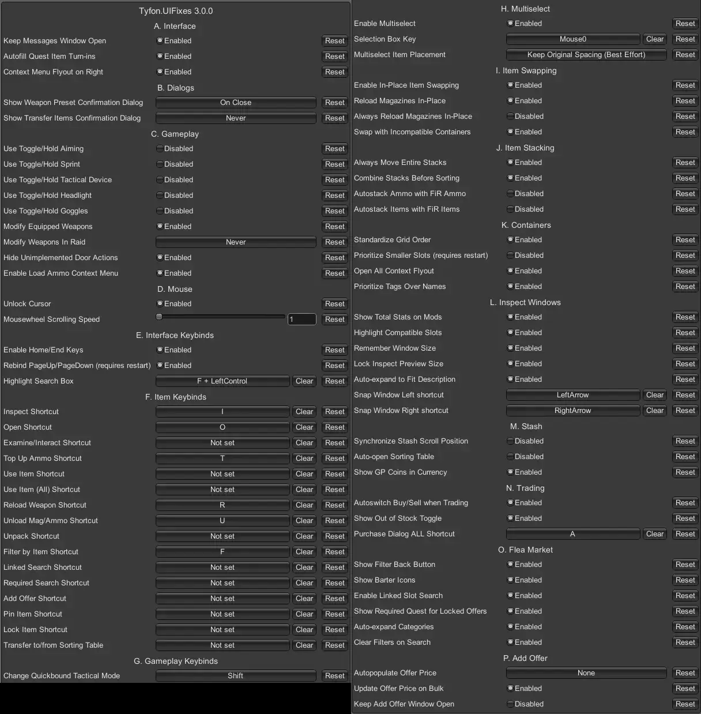

UI Fixes
- Downloads
- 402,502
- Favourites
- 262
- Mod lists
- 479
UI Fixes
THE CITY’s interface is full of annoyances, but it doesn’t have to be. This mod aims to fix at least some of them.
✨ Recently added
Added features
New UI features enabled by this mod
- Multiselect - select multiple items at once with shift-click or dragging a selection box
- Move items around as a group, drop them into containers, place them in grids
- Ctrl-click and Alt-click to quick move or equip them all. Compatible with Quick Move to Containers!
- Context menu to insure, equip, unequip, load/unload ammo, install/uninstall, pin, and lock all at once
- Swap items in place - drag one item over another to swap their locations!
- Flea market history - press the new back button to go back to the previous search
- Linked flea search from empty slots - find mods that fit that specific slot
- Keybinds for most context menu actions
- Toggle/Hold input - tap a key for “Press” mechanics, hold the key for “Continuous” mechanics
- Can be set for aiming, sprinting, tactical devices, headlights, and goggles/faceshields, and ✨ interact/place quest item
- ✨ Highlight quick-move and quick-equip destination
- ✨ Window manager remembers the status and location of open containers and inspect windows
Improved features
Existing SPT features made better
Inventory
- Modify equipped weapons
- Rebind Home/End, PageUp/PageDown to work like you would expect
- Customizable mouse scrolling speed
- Moving stacks into containers always moves entire stack
- Items made stackable by other mods follow normal stacking behavior
- Synchronize stash scroll position everywhere your stash is visible
- Insure and repair items directly from the context menu
- Load ammo via context menu in raid
- Load ammo preset will pull ammo from inventory, not just stash
- Multi-grid vest and backpack grids reordered to be left to right, top to bottom
- Vests and backpacks are taggable
- Sorting will stack and combine stacks of items
- Open->All context flyout that will recursively open nested containers to get at that innermost bag
- Improve modding/preset dropdown usability
- Enable context menu while searching (off by default)
- ✨ Search In Stash - add item context menu to open the search window for that item
- ✨ Rebind rotate key
Inspect windows
- Show the total stats (including sub-mods) when inspecting mods (optional, toggleable in the inspect pane with a new button)
- See stats change as you add/remove mods, with color-coded deltas
- Highlight empty slots when you drag items that can be attached there
- Remember last window size when you change it, with restore button to resize to default
- Move left and move right buttons + keybinds to quickly snap inspect windows to the left or right half of the screen, for easy comparisons
- Auto-expand descriptions when possible (great for showing extra text from mods like Item Info)
- Quickbinds will not be removed from items you keep when you die
- Compatible slots are now outlined in green, like the paper doll already does
- ✨ Resize fonts for stats and description
Traders
- Autoswitch between buy and sell when you click trader items or control-click your own items
- Autoselect quest items when turning in
- Repair window remembers last used repairer, and actually updates the repair amount when you switch repairers
- More icons on trader avatars - when their only new quests are operational (dailies/weeklies) and when you have items you could turn in
- Trader window remembers which tab you had open, and can optionally remember which trader you last looked at even when you completely close the trading screen
Flea market
- Auto-expand categories when there’s space to do so
- Locked trader item tooltip reveals which specific quest will unlock it
- Option to keep the Add Offer window open after placing your offer
- Set prices in the Add Offer window by clicking the min/avg/max market prices (multiplies for bulk orders)
- Autoselect Similar checkbox is remembered across sessions and application restarts
- Replace barter offers icons with actual item images, plus owned/required counts on expansion, ✨ color-coded if you own the items needed
- Clears filters for you when you type in search bar and there’s no match
Weapon modding/presets
- Weapons can grow left or up, not just right and down
- Enable zooming with mousewheel
- Skip needless unsaved changes warnings when not actually closing the screen
- Saving the current preset is now one-click; you don’t have to confirm the name. That’s what Save As… is for.
- Open build window can filter out stock presets so you only see yours
Hideout
- Remember window state when you leave hideout without closing (e.g. when searching for a recipe item on flea)
- Tools used in crafting will be returned to the container they were in
In raid
- Quickbind tactical devices to control them individually
- Option to make unequipped weapons moddable in raid, optionally with multitool
- Reloading will swap magazines in-place, instead of dropping them on the ground when there’s no room
- Grenade (✨ and consumable) quickbinds will transfer to the next grenade of the same type after throwing
- ✨ Queued input
- Holding sprint before forward will work (you will sprint)
- Holding certain actions (aim, reload, hold breath) during some other action will cause you to immediately do it when the current action is complete
- The messages window stays open when you return from transfering items
- ✨ Attachment icon now tracks attachments, not just new attachments.
Misc
- Confirm dialogs with Return/Enter/Space instead of just Y
- Close modal dialogs by clicking outside of them
- Sensible autofocus of textboxes in various dialogs
- Unlock cursor in windowed/borderless modes when in a menu
- Many little UI tweaks to tighten up the graphics
Fixes
Fixing bugs that Big Silly Goose won’t or can’t
Inventory
- Fix item tooltips disapparing if your mouse goes through the Quest/FoundInRaid icon (great for MoreCheckmarks)
- Fix windows appearing partially offscreen
- Fix modding/preset UI breaking when you click not allowed (red outlined) items
- Fix trader items not showing “Compatible with Available” with your items
- Fix selected barter items not being highlighted correctly
- ✨ Disassemble weapon actually works
- ✨ Debounce duplicate quest notifications and their ear-splitting sounds
- ✨ Fix Revolvers/Multibarrel guns not handling most ammo interactions
- ✨ Block alphanumeric keybinds when you’re typing in a textbox
Weapon Modding
- ✨ Fix Edit Build -> Assemble not handling duplicate mods or putting mods in the wrong slot
Hideout
- Fix top-down camera panning around when you’re in a menu
In raid
- Remove the unimplemented door actions like “Bang & clear” that are never going to happen
- Fix the keybind for weapons always showing up as 1, 2, and 3. Now shows your actual keybind like every other slot
- Fix issue where clicking the eye at the wrong time during raid load would break your equipment UI for the rest of the raid
- Fix not being able to pay the BTR man with money from your backpack or secure container if you happened to be carrying grenades
- ✨ Fix not putting your compass away when swapping weapons
- Skips “You can return to this later” warnings when not transferring all items
- “Receive All” button no longer shows up when there is nothing to receive
Like almost every mod here, extract the zip archive into your SPT directory.
Recommend using 7zip to extract and install this mod.
Example (thanks DrakiaXYZ for the gif)

Important Note for Fika users
Several of the features of UI Fixes make changes to inventory operations that are sent between multiple clients. You MUST install the same version of UI Fixes on all clients, including the dedicated client if you’re using that. At raid start, certain settings that must be in sync will be synced from the host client to all other clients, and only the host can change those settings (and they can at any time during raid).
If you don’t use Fika or don’t know what that is, don’t worry about it.
Uninstallation
To uninstall, simply delete Tyfon.UIFixes.dll and Tyfon.UIFixes.Net.dll from <your SPT folder>/BepInEx/plugins, and the Tyfon.UIFixes.Server folder from <your SPT folder>/SPT/user/mods
Configuration is available through the in-game F12 menu. Settings should be self-explanatory, be sure to mouse-over the name to see a more detailed tooltip if you’re confused.
There are some feature toggles that only show up if you select “Advanced Settings” at the top of the F12 menu. Check these if you don’t see a toggle you want, but most people won’t need those.
Default client settings are show below:

Other mods can interop with UI Fixes’ multi-select functionality! See the readme for details.
Other addon authors - UI Fixes touches a lot of code in the client. If you think there’s a conflict with your mod and UIFixes, please feel free to reach out. I’m happy to help our mods work together!
Q: Keybinds won’t work, or typing in textboxes won’t work
A: When your focus is in a textbox and your mouse is over an item, I have to pick which one to handle the keypress. Currently it will prefer keybinds, so textboxes won’t work if your mouse is over an item. If you’d prefer the opposite, where keybinds won’t work if any textbox has focus, enabled “Advanced Settings” at the top of the F12 menu and toggle “Block Text Inputs on Item Mouseover”
Q: When I start a raid with Fika, there’s a warning about a missing sync?
A: You didn’t install UIFixes on your host. UIFixes is required on ALL clients, including the dedicated host if you’re using that.
Q: Some of the settings in F12 menu aren’t changing! Nothing happens when I click them
A: Some settings depend on others - read the tooltips. Some settings are forced off if you’re using Fika, and if you’re in a Fika raid, some settings are locked to the host’s value.
Q: I found a bug !
A: Open an issue or make a comment here. Please include logs if possible!
If you’d like to support my work, you can buy me a coffee ☕
Version
5.3.11
- Fix cursor getting stuck “locked” in the weapon modding screen
- Fix player model panning/rotating at silly speeds when you change clothing many times
Version
5.3.10
New stuff 🚀
- Added panning and zooming to the player model in the character screen (thanks @7Bpencil)
- Added panning to weapons in the modding and build editing screens (thanks @7Bpencil)
- Automatically re-enabled group invite panel when PIT Fireteam is detected.
Bug fixes 🪳
- Fixed camera clipping when zooming in close on weapons (thanks @7Bpencil)
- Fixed issue with SAIN + Fika + Always Swap Magazines that caused bots to not fire after reloading. Bots no longer get to swap magazines in place. Get stuffed, clankers!
- Fixed Toggle/Hold Tactical setting not completely overriding Big Silly Goose’s Tactical Mode and causing issues/confusion.
Version
5.3.9
- Add setting to enable/disable weapon zoom with mousewheel (for users of Scrollable Attachments)
- Change rotate keybind to fall back to default THE CITY R handling if you clear the binding in the F12 menu.
- Fix a nullref when alt-equipping items directly from transfer screen
- Update some setting descriptions
Version
5.3.8
- Hide Group Panel from main taskbar. It serves no purpose, doesn’t work, and throws errors to boot.
- Fix certain UI Fixes settings reverting on client restart
- Fix multi-select operations changing items’ pin status.
- Fix compat with latest Fika
Version
5.3.7
- Fix issue where mod changes in the weapon modding screen that result in a grow left/up wouldn’t update the visual model
- Fix compat issue with Show Me The Money QuickSell where sometimes it wouldn’t work
- Fix quickbar visibility issues, including where it’s broken after visiting your hideout
Version
5.3.6
Rough day. Hotfix 2 - fix unnecessary rollback code breaking modding selector
Version
5.3.5
Hotfix null reference in add offer window
Version
5.3.4
New stuff ✨
- If Big Silly Goose’s prioritized window feature is enabled, the prioritized window will be bordered yellow, as it is in EFT 1.0 (Configurable)
- When holding CTRL and mousing over an item, the exact grid location that CTRL-clicking would move it to will be bordered yellow. (Configurable)
- When holding ALT and mousing over an item, the slot where it would be equipped by ALT-clicking will be highlighted yellow. (Configurable)
- Added keybind setting for rotate, since EFT’s default of R is hard-coded.
- Added configurable font sizing to inspect windows, weapon stats, and context menus
Bug fixes 🪳
- Improved F12 config menu experience for disabled/readonly settings. Readonly settings will now be grayed out with a reason.
- Disabled equipped armor plate swapping when Fika is present.
- Up/left item growth now works with swap
- Hide “Search in Stash” context menu in raid
Version
5.3.3
- Added “Hold Breath” to queued inputs - holding this key while aiming but moving will start holding breath as soon as you stop moving. Thanks Ozen!
- Better handling of expired mail attachments
- Fix repair flyout not handling multiple repair kit types with the same name
Version
5.3.2
New stuff ✨
- Added “Search in stash” context menu option. Opens stash search with the name of the item pre-populated in the search bar. Also triggered by using stash search keybind when mousing over an item (default ctrl-F)
- Fetching mail from the server is now paginated and lazy-loaded, and properly marks mail as read. This solves virtually all lag associated with having too many mail messages in your profile. This pagination change will be part of core SPT in a future SPT release, but is included now by UI Fixes.
Bug fixes 🪳
- Fixed Big Silly Goose bug causing containers to occasionally stop searching and then display 3 duplicate grids
- Fixed Big Silly Goose bug where trader filter sub-groups don’t properly deselect other filters
- Held weapon inputs (aim/reload) will now work while switching weapons
- Open windows will no longer be remembered between raids
Version
5.3.1
Add workaround and logging for mysterious quickbind bug
Version
5.3.0
- 🪟 Added feature to remember open windows and window locations per item. See “Inventory Windows” section of settings.
- 📲 Added visual feedback for swaps, so you can see where the swapped item will go (or why it can’t swap)
- Improved force swap button (Alt) to give instant feedback when pushed
- 🪳 Fixed weapon disassemble to actually work
- Extended quickbind shortening to the item itself, not just the quickbar
Version
5.2.0
New stuff 🚀
- Backported some 1.0 input changes.
- Holding sprint before pressing forward will make you start sprinting
- Holding aim while performing another action will start aiming as soon as the action is complete
- Holding reload while performing another action will start the reload as soon as the action is complete
- The above will only work if the keybind is set to “Press” or “Continuous”. Reload is “Release” by default (to allow mag selection UI). Works with UI Fixes’ “Toggle/Hold” as well.
- In settings as “Queue Held Inputs”, if you want to disable it for some reason
- Block hideout overhead camera zoom when mouse is on another monitor
Bug fixes 🪳
- Fixed empty slot context menu randomly getting extra buttons
- Fixed Big Silly Goose bug: Assembling builds didn’t properly handle duplicate items (e.g. multiple rails of the same name)
- Fixed Big Silly Goose bug: Toggling goggles with a compass in your hand will now properly put the compass away
- Fixed Big Silly Goose bug: Blocked duplicate quest status notifications within a single second
- Fixed some erroneous log spam
- Fixed “grow up/left” corner case (literally in the corner) that caused items to temporarily disappear
Version
5.1.2
New stuff 🚀
- Rebind consumables: when you fully consume food/drink/meds, the quickbind will automatically reassign to an item of the same type, if possible. Just like existing rebind grenades feature
- Multiselect context menu actions now work regardless of which selected item your mouse is over. E.g. a bunch of selected magazines can be loaded with ammunition even if your mouse happens to be over a full one.
- When dragging items that don’t fit into a grid, a red outline now extends beyond the edge of the grid to show you how big the item is
Fixes 🪳
- Fix stack merge not being possible from mail transfer. This is why you couldn’t drag money from your mail directly into a wallet or money case.
- Prevent hideout overhead camera from rotating/panning when another screen is on top
- Copied variable zoom fixes from Fika (thanks Lacy!). Only active if Fika is not present, since Fika has the same fix
- Fix item keybinds also typing into textboxes in hideout
- Fix some typos in UI Fixes settings
- Fix some multiselect edge cases
Version
5.1.1
Fix issue where adding flea offers after doing an empty slot search would break the client 🫠
Version
5.1.0
Shotguns, Revolvers, Multi-barrels, oh my 🐻
Big Silly Goose basically didn’t implement most inventory interactions for these weapons.
Out of raid
- You can now load revolvers and multi-barrels by dragging a stack of ammo onto them (previously this would load only 1 bullet)
- You can unload revolvers and multi-barrels with the context menu (previously only shotguns and bolt-actions supported this)
- Unloading bolt-action rifles with the context menu wills now also unload the chambered round
- Added Load Ammo context menu to shotguns, revolvers, multi-barrels, and bolt-actions
- Removed Load and Reload context menu from all of the above (it was permanently disabled)
- Multi-select dragging all the bullets out of a revolver or multi-barrel will now work as expected
- Note that revolvers do not support mag presets, and that’s a can of worms I’m not opening
In raid
- Dragging ammo onto an unequipped revolver will now load all the ammo, one at a time, like a magazine (previously only loaded 1 bullet)
- Note that UIFixes’ “Load Ammo In Raid” context menu feature does not apply to internal mag weapons (shotguns/bolt actions) or revolvers
Other new stuff ✨
- Added Toggle/Hold functionality for interactions (placing quest items, transiting, disarming tripwires, etc)
- Added “Force Swap” key (default: Alt). Holding this will prioritize swapping over other interactions, e.g. swapping backpacks instead of putting one inside the other
- Added option to remember your hideout crafting search filter even when you leave the screen entirely
Bug fixes 🪳
- Fixed Big Silly Goose bug where inventory keybinds would fire while typing in textboxes (i.e. you bound “toggle inventory” to the letter I, would make it impossible to use that letter while tagging items)
- Fixed intelligence center crafting search filter not being saved
- Fixed race condition when stacking ammo that would swap the stacks
Version
5.0.6
- Fixed dragging multiple stacks of ammo into a magazine in raid stopping after the first stack is loaded.
- Fixed a class of bugs around long-running multiselect operations (like the one above). Generally speaking, doing other actions will now cancel the remaining operations, since bugs and weirdness happened otherwise.
Version
5.0.5
- Fix exception breaking the prestige screen
- Fix exception when other mods modify hideout requirements
- Fix Big Silly Goose marking every single preset as “dirty” on open even when you don’t change anything
Version
5.0.4
New stuff ✨
- Overhauled messenger “unread” and “attachment” icons.
- Unread icon will now actually work and persist correctly across raids and client restarts
- Attachment icon is now useful and shows the number of messages with items left to collect.
- Non-FIR items auto-wishlisted for hideout upgrades will no longer show the hideout icon (if hideout upgrades require FIR)
- Ctrl-F (configurable) will open the stash search panel
- Stash search panel will auto-focus the search box
- Add Offer context menu now works with multi-select, if all the items are the same type
- Unload/Load weapon now supports multi-select
Fixes 🪳
- Fixed Linked Search for empty slots categories not working correctly
- Fixed some multi-select interactions with the stash search panel
- Fixed spacebar closing the stash search panel when you’re typing in the search box
Version
5.0.3
- Fix hideout production tools not being returned to their original containers if the server is restarted
- Fix the “Unpack” context menu (and hotkey) not being added to stash items on the transfer screen
- Fix wonky interaction when merging ammo stacks that would swap the resulting stacks
- Removed “Always Move Entire Stacks” F12 setting (the feature was already removed since it’s built into the game now)
Version
5.0.2
Somehow 5.0.1 had a strict requirement for SPT 4.0.1. Changed how the project references SPT, should now correctly only require ~4.x
Version
5.0.1
- Fixed load ammo context menu not showing up in raid 🪳
- Fixed discard context menu disabled in pockets 😩
- Fixed armor tooltip not hiding properly
Version
5.0.0
Updated for SPT 4.0 🚀
- Task item warning removed, as this was implemented by Big Silly Goose
- Stack FiR/non-FiR ammo feature removed, ammo is now never FiR
- Barter icons in flea offer view are now bordered green/red if you have the required items (thanks KobeThuy!)
Version
4.2.3
New stuff:
- Change the behavior of hideout upgrade auto-wishlisting, with 3 options:
- Normal: This is vanilla EFT behavior, and items will not be wishlisted if there are ANY other requirements missing, like rep, or skills, or other hideout areas
- Visible upgrades: The UI Fixes default. If you can see the upgrade, the item is listed. This means the area has an icon in the hideout, and items will be listed even if you lack rep or skill or something like that.
- All upgrades: Items will be wishlisted even for areas that you can’t see yet and can only navigate to using the area selector on the bottom of the hideout screen.
Bug fixes:
- Multi-select selection box will no longer select the player’s dogtag
Version
4.2.2
- Turn-in available icon on traders (blue hand) will disappear immediately upon turning in items
- Select-all will now select items off screen (still in the same container)
- Multi-select moving stackable items to the sorting table will no longer stall the multi-move and result in weirdness that sends items to the void 😩
Version
4.0.0
Updated for SPT 3.11 🚀
Also new:
- Fixed Big Silly Goose’s new trading highlight feature to, well, work
- One-click save presets. If I wanted to re-enter the name, I would have clicked Save As…
- Compatible slots on weapons are outlined in green, similar to the what the player paper doll already does
- Fixed error when using auto-switch trading feature very quickly
Version
3.1.3
New stuff 💥
- Changing attachments through modding screen will use swap (the old item will go where the new item was), if possible
- Out of Stock checkbox will persist through game restarts
- Add hot-key to multi-select all items of the type under your mouse, defaults to ctrl-A
- Prevent Big Silly Goose’s mousewheel zoom affecting your gun’s scope while you are scrolling your inventory
Bug fixes 🪳
- Prevent item hotkeys from affecting the item under your cursor while you are dragging a different item around
- Error messages around in-raid modding should show correct (more descriptive) error
- Fika multitool check for in-raid modding should now work properly when the gun is on a dead body.
Note: This is the last version that works with SPT 3.10.x
Version
3.0.0
This release only works with SPT v3.10. It will not work with earlier versions of SPT.
Features that are no longer needed
- Add offer context menu: implemented by Big Silly Goose
- Wishlist anywhere: implemented by Big Silly Goose
- Clickable market prices in Add Offer Window: implemented by Big Silly Goose, but UI Fixes still adds bulk support
- Add Offer window double scroll bar fix: fixed by Big Silly Goose
- Flea market masking fixes: fixed by Big Silly Goose
- Sorting without moving containers: Big Silly Goose implemented pinning/locking for a better experience, but UI Fixes still consolidates stacks
- Unload last bullet from mags fix: fixed by Big Silly Goose
- Deterministic Grenades: default grenade selection is now in order, by type (G will use the same type until exhausted, then pick the next type in order)
- Quick Access bar visibility fixes: fixed by Big Silly Goose
- Stack found-in-raid money with non-FIR money: all money is now considered non-FIR
New features
- Adding tagging to vests and backpacks
- Multiselect support for pinning/locking
- Improved mag preset name textbox/placeholder
- Fixed Big Silly Goose bug with clicking eye button during raid load
Updated features
- Overhauled config categories: there are now many more categories, hopefully makes the settings less daunting
- Linked search keybind now defaults to empty so as not to conflict with built-in “Lock Mode” keybind
- Hotkeys added for pinning/locking. Note that the game has built-in keys (default P and L) for pin and lock “modes”. Recommend changing those to something else, or just unbinding them completely and using UI Fixes hotkeys (which are better, imo)
- Locked items cannot be multiselected
- Hold/Toggle tactical device updated to override Big Silly Goose’s crude extra hotkey that swaps between toggle and hold mechanics
Removed features
- Unload ammo boxes in place. This feature is more trouble than its worth and Big Silly Goose completely changed the underlying code.
- Old sorting table button placement. With the addition of more buttons, and the removal of places that still had the old button, this feature to keep the old placement is being retired.
Version
2.5.3
Note: This is the last version that works with SPT 3.9.x
- Inspect panel will highlight (green border) compatible empty slots when dragging attachable mod (just like player equipment slots)
- In-raid weapon modding will not consider weapons equipped by dead bodies to be “in hand”
- Fix resizing left/up feature to work in raid
- Adjust rules around in-raid container swapping. Swapping incompatible containers (e.g. a container that could never fit inside another) was previously disabled in raid to prevent you from accidently swapping with your dogtag case and losing it all. That’s still disabled, but you can now swap *equipped* containers. This will let you swap your backpack with a bigger one off a dead body.
Version
2.0.4
- Fixed more multiselect issues stemming from 3.9 refactor
Version
2.0.0
Updated for 3.9.0!
Testing was a little rushed, let me know if anything isn’t working as expected.
Version
1.7.5
- Fixed issue when closing inventory while dragging a selection box
- Fix context menu flyout to open on the right side. Big Silly Goose always intended this, but their code is literally broken and always switches it to the left side. Configurable, if you’re really used to the old way and don’t want to change.
This is the last version for SPT 3.8.X.
Version
1.6.1
- Restore back-compatibility with 3.8.0 #sorry #notsorry #youshouldupdate
- Persist “Autoselect Similar” checkbox in the Add Offer window across sessions
- Localize the “< BACK” button added to the flea market 🌍
- The existing “Autostack Ammo with FiR Ammo” feature will now allow you to top up ammo with found-in-raid ammo, and vice-versa.
- The inspect window snap-left and snap-right buttons now have keyboard shortcuts (left arrow and right arrow by default) ⬅️➡️
Version
1.6.0
This particular version requires SPT 3.8.2 or greater for the feature “Show Required Quest for Locked Offers”. Version 1.6.1 or later does not, so if for some weird reason you’re installing 1.6.0 directly, be aware.
- Now with a server component to enable certain features
- Auto-switch between buy/sell when trading (just click or control-click items)
- Insure items directly from the context menu
- Autofill quest items when turning in
- Autofocus number field in flea barter offers
- Separate mousewheel scroll speed when in raid (advanced setting, select advanced settings to see it)
- Remember if you had the upgrade view active when leaving hideout
Bug fixes
- Setting flea offer prices by clicking market values now works for values over 10 million
- Locked trader offers will now show what quest unlocks it (for real, 3rd time’s the charm 🤞)
- Re-enabled swapping items in the post-raid scav transfer screen
Version
1.4.2
- Blocked swapping within the scav inventory, on the post-raid transfer screen only. Due to a bug in the server (fixed in 3.9.0), this would cause a server error that would force a client restart.
Version
1.3.4
- Fix nested mod stats not showing buttpad stats, because of course buttpads are somehow special 🍑
- Fix Big Silly Goose not knowing how to display MOA correctly and rounding deltas to the nearest integer
- Fix Show/Hide mod stats not updating in other windows if you had multiple inspect panels open
- Fix quickslot bindings persisting on items that are swapped to non-bindable places (compatible with Use Items Anywhere) 4️⃣5️⃣6️⃣
- Fix mods swapping with weapons when adding the mod would increase the size of the weapon beyond available room
- Fix items not being hovered after swapping, so you would have to mouse-off then mouse-over them again to interact 🖱️
- Inspect panel shows stat difference when swapping mods, both dragging onto the slot or dragging the slotted item over a different item in your stash or inventory
- Fix non-fatal exception that got logged when you tried to swap a container into itself
- Confirm compatible with 3.8.1 ✅